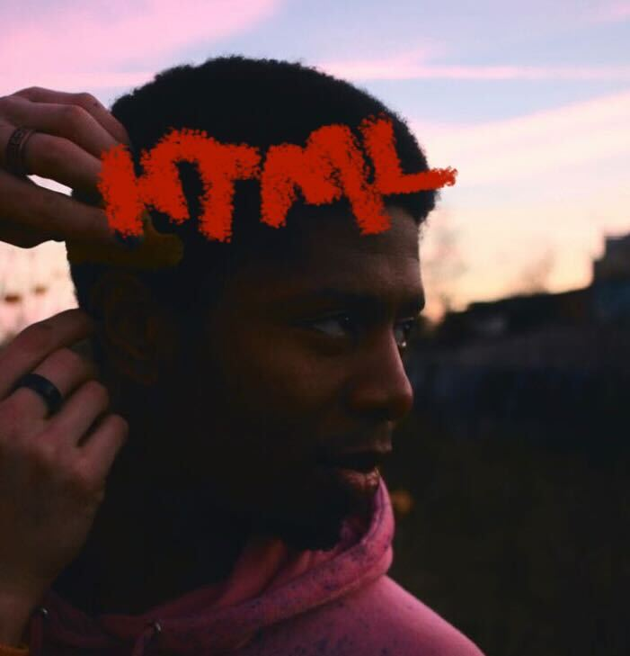

Applying for a room at Hadi's flat
Hello Hadi,
My name is John Adams, 28 years and find the pictures of your apartment very appealing.
Hope that you still have capacity for a casting.
Short information about me, myself and I.
I was born in Ghana, have lived in Germany for 18 years and I
wish to enrich the internationality in your flat. As a person I am very
positive - very open-minded, - like to be inspired and available for good
conversations of any kind. In the last couple years I have built a super
cool network of the most wonderful people in Berlin and I very much want my
future flat to enrich it.
For example, I have many friendships in the BiPoC.
and queer community.
:professionally, I am doing further education in the
IT industry. DCI
:briefly to the matter with order and cleanliness - because I
welcome order in the WG also very much :)
In my free time I do sports. Among them jogging, yoga and inline skating. I also like to
cook and also cook for friends including flat-sharing. I’m always down for a nice flat chillout
evening or a breakfast on the weekend. I also like art, music, and
cultural stuff like visiting concerts, vernissage - I think thats the
reason why I chose to come to Berlin in the first place. And of course the nightlife 😉
I don’t do music myself, but have recently acquired an acoustic guitar
Anyway, I’m down for a casting of any kind, online, outside, in a bar,
cafe or just to your place - I would appreciate the opportunity to meet
for a tea accordingly.
Kind regards,
John Adams

Go up